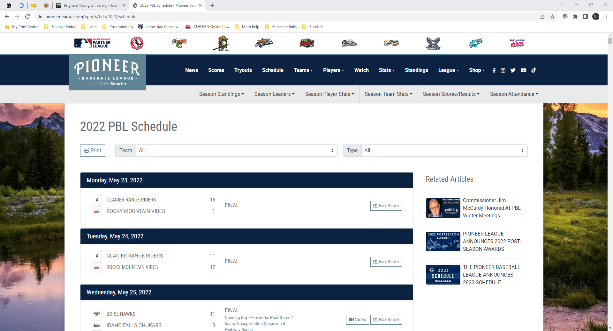
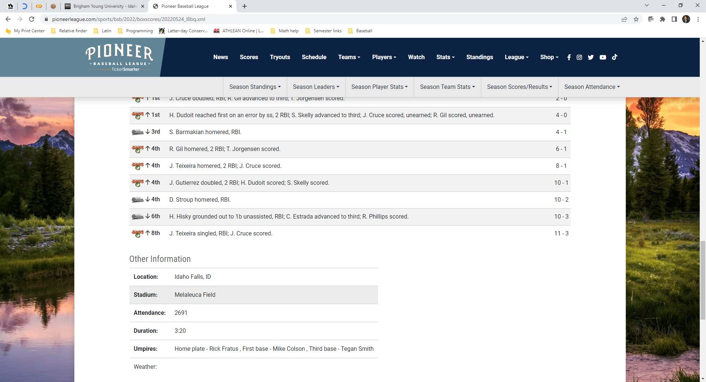
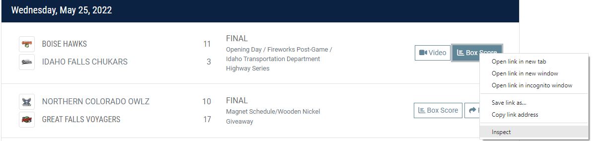
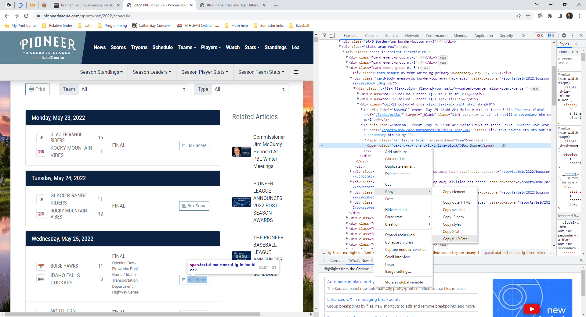

Before this project I had no experience web scraping. I had certainly heard about and seen it done, but never experienced it myself. Web scraping is really just a way to automatically search the web or website and grab or copy the desire data from it. My reason for doing this was simply to be able to match game data from Trackman for the Pioneer Baseball League with the associated Umpires for each game as Trackman does not capture this information. In my role, as the Committee Chair of the Data Analytics group for the Pioneer League and from other conversations with League people I was involved in, umpire evaluations was a common theme.
Since my last article I have spent much of my time writing the script to grab Umpire information from the League Website. There has been a lot of trial and error so here are a few things I have learned:
- Small test are the best route to go
- It’s better to get something to work with rather than wait for the perfect solution
- One really needs to think about how all potential options
- One small change can have major affects on the whole program
My Experience
I chose to use the python package Selenium as my package. I also decided to use Firefox as my browser choice as well. I had seen both of these used before and Firefox just worked better than Chrome. This article is not intended to go into the details of how to do rather just discuss my experience.
The Flow
The Data I was after was found in the box score link of an individual game. In order to get to it or rather scrape all historical data at once, I had to go first to the schedule page (https://www.pioneerleague.com/sports/bsb/2022/schedule) and click on the box score then chose to grab all the “Other Information” in the box score for a game. Subsequently, the script needs to loop through all games, click on box score grab data from “Other Information” and then go back to the schedule url.
It goes as follows:


Then back to the schedule page.
Pretty straight forward, but it amazes me just how difficult or how much more invovled it gets.
The Code
As Mentioned I used Selenium and Firefox. Here is a snippet of the code that gets the script running:
Code
from selenium import webdriver
schedule_url = r'https://www.pioneerleague.com/sports/bsb/2022/schedule'
# driver = webdriver.Firefox()
# driver.get(schedule_url) I struggled in the beginning to know how to go about scraping the web and what instructions to give to python to know what to scrape and do it dynamically. In my Google searching I came across xpath’s. I came to find out that a web pages html is very much a tree with branches and nodes. The xpath is similar to a file’s directory and can be thought of as a web pages directory to a specific branch and node.
How to find the xpath
I go to this by right clicking on the box score and clicking the inspect option.

This leads you to the html code for the website and the exact code for the box score of the page where I was able to copy the xpath.

My Solution
At first I wanted to scrape the websites and put everything in csv file exactly how I wanted. This meant, in a nice tidy format where I would have a column for game date, home team, away team, then all the “Other Information” which was: Location, Stadium, Attendance, Duration, Umpires and Weather. I soon realized that not every game’s “Other Information” section had the previous mentioned sections. In other words, the data was sparse meaning I had to take this into account in my script.
So I went down the road of trying to figure out the perfect solution that would allow this and other things to be taken into account. As I was struggling to get a working solution my professor suggested that I should just get the “Other Information” as one piece. So rather than put the data for the “Location”, for example, as one, rather grab and then pull its associated data together and just get that as one. This means the script will return one column with the value of “Location: Idaho Falls, ID” for it’s associated game. Then I could take this and do some data wrangling to get the data in a tidy format with Location being a column and Idaho Falls being the value in the cell and so on with all pieces of information.
I realized I needed to do that and come back to the perfect solution later. It is better to get something working than to be held up waiting for the perfect solution before moving forward in the project.
The script returned the resulting data object:
Code
pacman::p_load(DT, tidyverse)
scrape_data <- read_csv('../../data/game_info_test_2_columns_04.csv')
scrape_data <- scrape_data %>% select(-c('...1', 'away_team', 'home_team', 'teams')) %>% .[1:10,]
DT::datatable(scrape_data)I then did some wrangling to get the data in tidy format:
Code
wrangled_data <- read_csv('../../data/Offical_game_Umpire_data_02.csv')
wrangled_data <- wrangled_data %>% .[1:10,]
DT::datatable(wrangled_data)Once I got to this point I knew all I had to do was join the data together and I would be able to start working on Umpire Evaluations. But I failed to, and should have caught this, that just joining on date would not do it as there are more than one game in a day making it not unique. Talking to my professor, we decided the column, gameID (20220525-MelaleucaField-1), from Trackman will do it. I got going down that road and realized that this way would not take into account double headers or simply an operator error where the game gets submitted multiple times. While it is the same game it has an id of 1 then 2 or 3. What I decided to was to join on date and stadium instead.
As you may be able to see, there is still some issues with the data that need to be worked out in the script
This still needs to be worked on and gameID is probably the best option to move forward with. The question or obstacle will be identifying double headers and taking that into account so gameID’s can match properly.